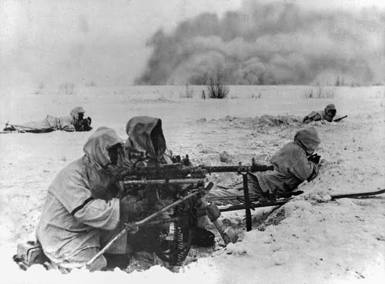
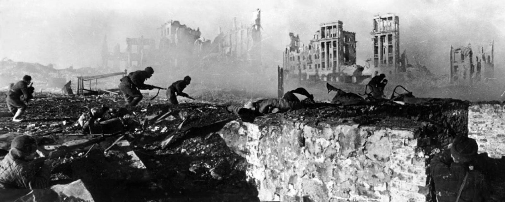

The Battle of Stalingrad
Fought between late summer 1942 and early February 1943, the Battle of Stalingrad halted the German advance into southern Russia, inflicted massive losses on the Axis, and marked a decisive turning point on the Eastern Front.
Case Blue and the Push Toward the Volga

After the Wehrmacht failed to take Moscow in late 1941 and suffered heavy casualties during the ensuing Soviet winter counteroffensive, German strategic planning in 1942 shifted southward. Under Operation Case Blue (Fall Blau), Germany aimed to drive across southern Russia toward the oil fields of the Caucasus while securing its northern flank along the Don and Volga rivers.
Stalingrad occupied a vital geographic and symbolic position along the western bank of the Volga. Seizing the city and cutting river traffic would disrupt a key transport artery connecting southern resources with central Russia while delivering a heavy propaganda blow against a city named after Joseph Stalin.
During the early summer of 1942, German mobile forces moved rapidly across the open steppe, overrunning stretched Soviet defenses and pushing deep into southern territory. However, the sheer scale of the theater stretched supply lines, while directives dividing effort between Stalingrad and the Caucasus diluted offensive punch.
By late August and September 1942, General Friedrich Paulus's Sixth Army closed in on Stalingrad. Massive Luftwaffe bombing raids turned much of the city into burning ruins, yet that destruction left behind mountains of rubble, cellars, and shattered walls that blunted armored mobility and favored stubborn defense.
Control of the Volga river crossings became a central test of endurance. Even when German forces pushed close to the riverbanks in several sectors, Soviet logistics ferries and barges continued moving troops, ammunition, and wounded across the water under challenging conditions.
As autumn arrived, the battle shifted from sweeping maneuvers across open plains to concentrated pressure on a single urban front. Every advance required exhausting coordination between infantry, engineers, artillery, and air support.
Industrial output in southern and central Russia gave the campaign high stakes for both capitals. Severing river transport along the Volga while pushing toward Caucasian oil fields aimed to starve the Soviet war economy of fuel and raw materials, even as German logistics stretched across hundreds of miles of rail and road lines already strained by distance and partisan activity.
Grinding Urban Combat in the Ruins

Once fighting entered the city streets, the battle became a grueling struggle of attrition fought building by building, floor by floor, and cellar by cellar. Soviet defenders—led in the city by General Vasily Chuikov under the broader front command—brought reinforcements and supplies across the Volga despite artillery and air interdiction.
Debris-choked streets and piles of brick limited tank maneuver and turned urban landmarks—such as grain elevators, apartment blocks, railway stations, and northern industrial plants like the tractor factory and Red October steelworks—into contested strongpoints.
Close-quarters combat relied heavily on small assault teams, submachine guns, grenades, mortars, and snipers operating from upper stories and ruins. Both sides endured severe fatigue, high casualty rates, and tight supplies as every block changed hands repeatedly.
While the Sixth Army committed overwhelming effort to finishing the fight inside Stalingrad, hundreds of kilometers of flanking lines along the Don River were increasingly held by allied Axis armies—Romanian, Hungarian, and Italian forces—often lacking sufficient anti-tank weaponry and holding wide frontages with limited reserves.
Inside the shattered city, lines often separated combatants by only a few meters or a single wall. Controlling an upper floor, a stairwell, or a cellar could determine observation over nearby streets and approaches.
Winter weather added another layer of hardship as temperatures dropped and mud gave way to ice and snow. Maintaining weapons, evacuating casualties, and rotating exhausted units grew more difficult with every passing week.
Every street corner, factory bay, and railway embankment carried tactical significance once combat settled into the ruins. Defenders fortified cellars and upper floors with sandbags, rubble, and firing slits, forcing attackers into slow, methodical clearing actions where artillery support had to be carefully timed to avoid hitting friendly troops holding nearby positions.
Operation Uranus, Encirclement, and Aftermath

While German forces remained tied down in close urban fighting inside the city, the Red Army quietly assembled mobile armored and mechanized formations behind its lines for a counterstroke. On November 19, 1942, Soviet forces launched Operation Uranus against the weaker flanks north and south of Stalingrad.
Within days, advancing Soviet pincers broke through and met near Kalach on November 23, trapping roughly a quarter of a million Axis soldiers—including most of the Sixth Army—inside a tightening encirclement. A German relief push led by Erich von Manstein (Operation Winter Storm) came within roughly fifty kilometers of the pocket in December before Soviet defenses halted it.
Hitler refused to permit an early breakout from Stalingrad and backed Hermann Göring's pledge that the Luftwaffe could supply the trapped force by air. Severe winter weather, long flight distances, anti-aircraft fire, and limited transport aircraft meant daily tonnage fell far short of what the encircled troops needed.
By late January and early February 1943, remaining Axis pockets in Stalingrad surrendered after months of combat, cold, hunger, and dwindling ammunition. Stalingrad did not end the war on the Eastern Front—major tank and mobile battles still lay ahead at Kursk and beyond—but it broke German strategic momentum in the east and began a long, costly retreat toward Germany.
The destruction of the Sixth Army and heavy losses among allied Axis formations deprived Germany of experienced veterans and key operational reserves. Meanwhile, Soviet commanders and troops gained hard-won operational experience in encirclement and combined-arms counteroffensives.
Politically and symbolically, Stalingrad reshaped perceptions of the war across Europe and the world. It showed that the Wehrmacht could not only be stopped, but encircled and defeated on a massive scale.
When the winter encirclement tightened around the Sixth Army, command friction and severe weather compounded the crisis. Soldiers faced sub-zero temperatures, dwindling rations and medical supplies, and mounting pressure from Soviet attacks, while the loss of veteran forces across the Stalingrad sector permanently altered the balance of strength along the Eastern Front.
For the broader course of the war, Stalingrad shifted strategic initiative away from the Axis in eastern Europe. Resource constraints, heavy manpower losses, and the collapse of German plans for southern oil dominance meant that subsequent campaigns increasingly forced Nazi Germany onto the defensive.